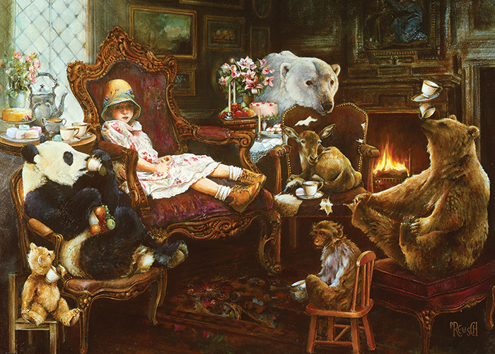

A Stash of Stories
A blog full of stories written by yours truly
Tea for Two... or Seven.
by Fruit Dragon

Art by Lori Preusch
Tea for Two... or Seven.
“Emmilyn! Look what you’ve done!” Mother snapped.
“What did I do?” I asked, confused.
“Look at the floor. You’ve tracked mud in from the garden! The butler will have to
clean it for the third time this week!”
I frowned at her. “So? It’s just mud. That’s everywhere.”
Mother’s face grew so red I thought it might explode. “Go to time-out this instant,
young lady! You do not talk to your mother in such a fashion, and you do not treat
antique furniture so carelessly!”
I clomped off down the hallway as she yelled, “And take off those infernal boots!”
Turning, I stuck my tongue out at her before entering the parlor.
I plopped down on the velvety throne-like seat in front of the diamond-paned windows
where Papa sat on weekends and read to me, at least when he wasn’t going on his worldwide
expeditions. Clearly, a six-year-old daughter wasn’t enough to keep him home, but he did
bring amazing toys back for me. And the tales he would tell…
My attention was brought to the butler who entered the room. He took one look at my boots
and said, “You are on timeout, miss? Shall I light the fireplace and bring you some food?
You must be hungry after playing in the garden with your brothers.”
“Right again, Sir Butler. Yes to all of your questions,” I said. He stoked the fire,
dropping in some fresh wood, then left to get the treats. A few minutes later, he came
back and placed the pastries and fruit on the tables on either side of my chair, then
left again.
My gaze fell on my teddy bear, the one my father brought back from his last expedition.
He told me to give it a meaningful name, but I still hadn’t come up with one. For now,
I just addressed it as ‘Teddy Bear’.
“Hey, Teddy Bear,” I said. “Isn’t it unfair that Mother never scolds my brothers for
tracking in mud, but she scolds me? Not to mention that she makes me wear this itchy
dress and tight hat.” I tugged it down lower over my ears.
“Well,” Teddy Bear said in a high pitched voice. “I suppose.”
I sat up straight. “You can talk?”
“Of course. My friends can talk, too. I invited them over. They are waiting outside.”
I scratched the back of my neck as I thought it over. “They can come in, I suppose.”
“Yes! Christopher, Dara, Edgar, Notus, Mei Lan, you can come in,” Teddy Bear yelled.
My eyes widened as a brown bear, a deer, a monkey, a polar bear, and a panda all filed in.
Papa had told me about these animals, but I hadn’t quite believed him when he told me
about them, sure it was far too fantastical. But clearly, they were right here.
I turned to face Teddy Bear. “How did you get them here?”
The brown bear chuckled. “He sent us letters. I’m Christopher. Who are you?” He reached
out a paw for me to shake.
“I’m Emmilyn,” I said, my eyes still wide. “And what about the rest of you?”
“The panda’s Mei Lan, the monkey is Edgar, the deer is Dara, and Notus is the polar bear
wedging himself into a corner,” Christopher laughed. “He’s shy.”
At the sound of his name, Notus hunched down further.
“Well,” Mei Lan said, her voice thick with an accent. “Let us all sit down, yes?” She
plopped onto a smaller velvety seat before pulling out a chair next to hers for Teddy
Bear to sit down. Christopher and Edgar followed her example, the latter sitting on a
wooden chair while the former lounged on a footstool. Dara settled on a cow-hide chair.
“Tea, anyone?” In response was a chorus of “yes, please”. Slipping off the chair, I
stepped around and poured tea for everyone before climbing back on.
“Can I have some fruit as well?” Mei Lan asked. I nodded and grabbed a handful which I
passed to her.
Suddenly I heard Teddy Bear clapping. Turning, I saw Christopher holding his back legs
with his front legs and balancing the garnet rim of a teacup on his nose. He slowly
reached out and put another one on. “Look what I can do!” he crowed.
I glanced away, still slightly annoyed at my mother. At that moment, Christopher bellowed,
“Woah, woah!” and the sound of shattering china filled the air.
“Christopher!” six voices sounded at once.
***
The butler faintly heard the sound of shattering china. Turning, he ran off towards the
source, the parlor where Emmilyn was sulking. His first thought was to see if the little
girl was okay; his second centered around how to remove the shards out of the rug.
He came to a stop – butlers don’t skid; they’re too poised-– in the doorway to the parlor.
“Is everything alright here, Miss Emmilyn?”
Emmilyn looked up from where she was crouched by the velvet settee, probably trying to
assess the damage. “Sir Butler! I’m fine, Christopher not so much.”
The butler was momentarily confused, but his attention fell to the teddy bear perched on
a miniature chair meant for dolls. “Yes, but must you break the china? You know what your
mother will say.”
“I didn’t break the teacups; Christopher the brown bear did,” Emmilyn insisted. Then her
lip quivered. “And I don’t- don’t care what Mother says.” Her attention drifted. “Yes, I
know you are sorry, Christopher. Don’t do it again.”
“Miss Emmilyn, I will have to take the carpet out for cleaning. Please gather the dishes
so I can send a servant to fetch them. And make sure not to step on any porcelain shards,”
he added as an afterthought.
“Don’t worry. I have my boots, and my friends have thick paws. We’ll be fine.”
Friends? But he smiled softly at Emmilyn. “I know you will.”